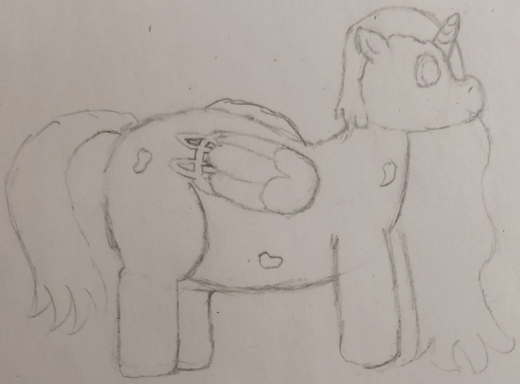

| Source | Live birth from solar magic-receptive parent |
| Durability | 10/10 |
| Strength | Physical: 6/10 Psionic: 4/10 Magical: 12/10 |
| Specials | Solar magic Solar puppet influencing Flight |
| Personality | Variable; tends towards energetic |
Solar Archons are Archons who have been born healthily to an archmother, with some genetic contribution from a parent capable of wielding powerful solar magic. They act as strongpoints of magical energy within a puppet clan, but suffer with a large-scale inability to influence their own spawns, with minimal influence on a puppet's epigenetic profile.
Solar Archons, named for their powerful solar magic, are perhaps one of the stranger archon variants due to their lack of major spawning influences and considerable self-harbored magical potential. They have one of the "purest" body profiles, with minimal alteration aside from their wings and the fact that their manes take on a certain faintly iridescent multicolour hue. Other than that, Solar Archons have a relatively normal appearance, with a few side heads for psionic reception and a single large spawning orifice on their back.
Like the Australi that are sculpted after them, Solar Archon wings are crested with constructs of solar energy, though unlike those puppets, Solar Archons typically conduct magic via their horns.
As Archons, Solar Archons primarily exist to increase the speed of growth of a puppet clan. They have a somewhat modest performance in this regard, with spawn sizes ranging from one to four puppets at a given time. Their ability to influence puppet epigenetic profiles is very weak, and as such, with the exception of Howitzers being augmented into Heaps, they only produce "normal" puppets when regularly spawning. They can also take command of a portion of the gestalt for large-scale coordination purposes, though even in this regard Solar Archons are somewhat limited.
Solar Archons make up for their weakness as a collective with individual magical strength. Their potential magics are quite varied, mixing the Archmother's knowledge with their own solar tint, and they are quite powerful in regards to magic. This combined with their ability to fly makes them exceptional autonomous units, and they are perhaps the archon type best suited to diplomatic affairs outside of a puppet gestalt.
With a greater independence than normal puppets, Solar Archons can display a considerable variety of behaviour depending on the individual's temperament. Solar Archons seem to vary even more wildly than regular Archons in this regard; while they do tend to be more excitable than others, their personalities otherwise range much more variably. It is believed this is owed to the relative purity of the archon, reflecting in a lesser tendency towards a specific lean.
Solar Archons feature a very narrow band of affected puppets, only one of which they spawn regularly. However, they are one of very few archon types to be able to influence the shape of a titan, and do deserve recognition for that. The full list is:
Solar magic is a very well-understood phenomenon, and as such, Solar Archons leave very few surprises. They are debatably the most "normal" of any archon, with their most outstanding trait being a relative lack of anything particularly outstanding. While their relative inability to control large delegations of puppets is a hindrance, it does not seem to reflect any sort of ill on the archons' part.
The Solar Archons... Perhaps the closest any of my children might come to being accepted by a majority of individualist folks. They are much better at walking that sort of walk than even I am. It's quite nice to have some help in that regard, it gives me more time for the rest of my children and anything in particular I'd like to see done in particular. And of course, the verdants love having permanent access to the sunshine.
Solar Archons are a bit self-indulgent on my end, and part of a story I'm writing. Solace, the first Solar Archon, is the child of Hyacinth and Princess Celestia. That's where the wings and strong sun magic come from, as may have already been evident when reading. This also makes them the first (only, at the time of writing) spawn-capable abomination with the ability to fly, which definitely gives them a very particular niche (even if that niche is one they don't particularly take advantage of).
